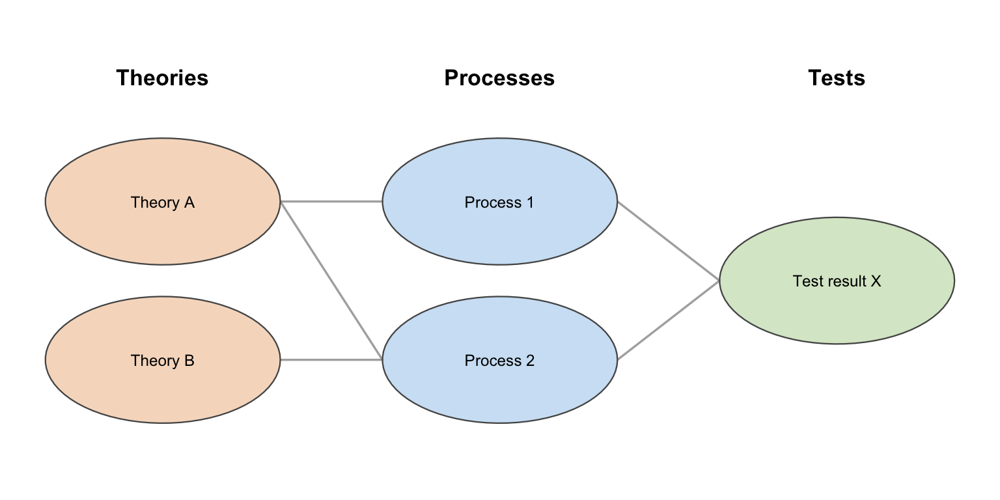

source("concept-map.R")concept-map.R: many-to-many column diagrams
Walkthrough: how the script works, and how to use it in Quarto
Aims
concept-map.R draws a general “N columns of ellipses, many-to-many curved links between adjacent columns” diagram, in the style of McElreath’s Statistical Rethinking Figure 1.2 (theories → process models → statistical models). It’s used in doing-being-science.qmd to make the point that the theory is not the hypothesis is not the statistical test result: several different theories can imply the same process model, and several different process models can imply the same statistical test result, so a single statistically significant result never uniquely confirms one theory.
Unlike person-grid.R/testing-sequence.R, this script isn’t about pictograms at all — it’s a general-purpose node-and-edge diagram builder that happens to use ellipses and curves rather than a graph library, so it renders identically wherever Quarto builds the document.
After working through it, you should be able to:
- explain how node layout and edge computation are kept independent until the final plot;
- build your own N-column, many-to-many concept map for a different topic, including per-column sizing for uneven label lengths;
- diagnose the validation errors/warnings the script raises for bad edge indices or too-tight column spacing.
Prerequisites / assumptions
- Packages:
ggplot2only. - Sourcing: standalone — no other script in this set needs to be sourced first.
- Reader background: no special background needed beyond basic
ggplot2(geom_polygon(),geom_curve()).
How it works: the process
flowchart LR
A["columns: list of\ncharacter vectors\n(node labels per column)"] --> D["validate edges\n(catch typo'd indices early)"]
B["edges: list of\nfrom/to index data frames,\none per column gap"] --> D
C["rx, ry, wrap_width, dx, dy:\nsizing + spacing\n(global or per-column)"] --> E["lay out nodes:\none column at a time,\ncentred vertically"]
D --> F["compute edge endpoints\nat each node's own\nellipse boundary"]
E --> F
F --> G["ggplot():\ngeom_curve() edges +\ngeom_polygon() ellipses +\ngeom_text() labels"]
The structure mirrors a typical graph-drawing pipeline: nodes are laid out first (purely from columns + sizing parameters, independent of edges), then edges are computed as line segments between specific node boundaries, then both are drawn in one plot. Keeping layout and edges separate is what makes “many-to-many” straightforward — an edge is just (from index in column k, to index in column k+1), resolved to actual coordinates only at the end.
Element-by-element walkthrough
Geometry helpers: ellipse_pts() and wrap_label()
ellipse_pts <- function(cx, cy, rx, ry, n = 72) {
t <- seq(0, 2 * pi, length.out = n)
data.frame(x = cx + rx * cos(t), y = cy + ry * sin(t))
}
wrap_label <- function(label, width = 16) {
paste(strwrap(label, width = width), collapse = "\n")
}ellipse_pts() is the ellipse analogue of person-grid.R’s circle_pts() — a centre, two radii (rx, ry), and a point count. wrap_label() wraps long node text (e.g. full theory sentences) onto multiple lines at a given character width, using base R’s strwrap(), since node labels here are often full sentences rather than short tags.
cat(wrap_label("Words we experience more often are easier to recall", width = 16))Words we
experience more
often are
easier to
recallPer-column parameters: recycle_per_column()
A design choice specific to this script: rx, ry, and wrap_width can each be given as either a single value (applied to every column) or a vector with one entry per column:
recycle_per_column <- function(val, name) {
if (length(val) == 1) return(rep(val, k))
if (length(val) == k) return(val)
stop(sprintf("`%s` must have length 1 or length(columns) = %d, not %d.",
name, k, length(val)))
}This matters in practice because columns rarely hold equally long labels — e.g. a “theories” column of full sentences next to a “statistical tests” column of short phrases needs a bigger ellipse (and wider wrap width) on the first column, not a one-size-fits-all setting.
Validation before layout: edge-index checking
for (ci in seq_len(k - 1)) {
e <- edges[[ci]]
n_from <- length(columns[[ci]])
n_to <- length(columns[[ci + 1]])
bad_from <- e$from[!(e$from %in% seq_len(n_from))]
bad_to <- e$to[!(e$to %in% seq_len(n_to))]
if (length(bad_from) > 0) {
stop(sprintf(
"edges[[%d]]$from has out-of-range value(s) %s: column %d ('%s') only has %d item(s), so valid indices are 1..%d.",
ci, paste(unique(bad_from), collapse = ", "), ci,
if (!is.null(titles)) titles[ci] else paste("column", ci), n_from, n_from
))
}
# ... same check for `to` ...
}
NoteWhy validate indices before plotting?
Every from/to index in edges is checked against the actual length of the relevant column before any plotting is attempted. The failure mode this avoids is subtle: an out-of-range index used directly as a lookup would otherwise silently produce NA coordinates, and the edge would simply vanish from the rendered plot with only a generic, hard-to-trace ggplot2 warning — rather than an error that names the exact column and bad index.
A second check guards column spacing rather than edge indices:
for (ci in seq_len(k - 1)) {
min_dx <- rx[ci] + rx[ci + 1]
if (dx <= min_dx) {
warning(sprintf(
paste("dx = %.2f may be too small for columns %d and %d",
"(rx = %.2f and %.2f): their ellipses may overlap.",
"Consider increasing dx."),
dx, ci, ci + 1, rx[ci], rx[ci + 1]
))
}
}This warns if dx is too small for two neighbouring columns’ rx values, which would otherwise manifest as visibly overlapping ellipses with no explicit warning pointing at the cause — easy to miss if you’ve just widened one column’s rx for longer labels without revisiting dx.
Laying out nodes and edges: the body of concept_map()
nodes <- do.call(rbind, lapply(seq_len(k), function(ci) {
labels <- columns[[ci]]
m <- length(labels)
data.frame(
col = ci, idx = seq_len(m),
x = (ci - 1) * dx,
y = (m - 1) / 2 * dy - (seq_len(m) - 1) * dy,
label = vapply(labels, wrap_label, character(1), width = wrap_width[ci]),
fill = fill_colors[ci],
rx = rx[ci], ry = ry[ci],
stringsAsFactors = FALSE
)
}))Each column is laid out independently: column ci sits at x = (ci - 1) * dx, and its own m items are centred vertically around y = 0 (the formula places item 1 at +((m-1)/2)*dy and the last item at the mirror-image negative value).
NoteRows don’t align across columns
Columns with different numbers of items are each centred on y = 0 independently, so a specific row position doesn’t correspond to the same item across columns — a 3-item column and a 2-item column don’t have their first items aligned. This matches the McElreath-style figure (where correspondence is carried by the edges, not by row alignment), but is worth checking visually for your own content.
edge_df <- do.call(rbind, lapply(seq_len(k - 1), function(ci) {
e <- edges[[ci]]
do.call(rbind, lapply(seq_len(nrow(e)), function(j) {
p1 <- node_xy(ci, e$from[j])
p2 <- node_xy(ci + 1, e$to[j])
data.frame(x = p1["x"] + p1["rx"], y = p1["y"],
xend = p2["x"] - p2["rx"], yend = p2["y"])
}))
}))Edges run from the right edge of the source ellipse to the left edge of the target ellipse (+rx/-rx from each node’s own centre, not a shared/average rx), so differently-sized ellipses across columns still meet their edges at their actual boundaries rather than at a one-size-fits-all offset.
Drawing: arrows vs. plain correspondence lines
geom_curve(data = edge_df, aes(x = x, y = y, xend = xend, yend = yend),
curvature = curvature, color = edge_color, alpha = edge_alpha,
linewidth = 0.6,
arrow = if (arrows) arrow(length = unit(0.12, "cm"), type = "closed") else NULL)arrows = TRUE (the default) draws a small arrowhead at each curve’s target end, implying directionality. For a diagram about correspondence between theories/processes/statistical tests — not a causal chain — the deck sets arrows = FALSE, giving plain connecting curves closer to McElreath’s original figure.
demo_columns <- list(
c("Theory A", "Theory B"),
c("Process 1", "Process 2"),
c("Test result X")
)
demo_edges <- list(
data.frame(from = c(1, 1, 2), to = c(1, 2, 2)),
data.frame(from = c(1, 2), to = c(1, 1))
)
concept_map(demo_columns, demo_edges, titles = c("Theories", "Processes", "Tests"),
arrows = FALSE, curvature = 0)$plot
Quarto usage / integration
Setup-chunk line:
source("concept-map.R")Real usage from doing-being-science.qmd — the theory/process/statistical test figure, with per-column structure built directly in the chunk (theory_columns, theory_edges, theory_titles) and plain (arrowless) curves:
```{r}
#| label: fig-theory-process-stats
#| fig-cap: "Different theories can imply the same process, and different processes can imply the same statistical test result"
#| fig-width: 9
#| fig-height: 5.0625
theory_columns <- list(
c("Words we experience more often are easier to recall",
"Frequency or age of experience does not matter to recall",
"Words we experience early in life are easier to recall"),
c("Neural network connection strength changes",
"Neural word representation quality changes",
"Word recognition decision-making strategy changes"),
c("Experience correlates with word recognition speed",
"Experience does not correlate with word recognition speed")
)
theory_titles <- c("Theories", "Process models", "Statistical tests")
# theories -> processes: many-to-many
# processes -> statistical models: every process links to both tests
theory_edges <- list(
data.frame(from = c(1, 1, 2, 3, 3), to = c(1, 2, 3, 1, 2)),
data.frame(from = rep(1:3, each = 2), to = rep(1:2, times = 3))
)
concept_map(theory_columns, theory_edges, theory_titles, arrows = FALSE, curvature = 0,
edge_color = "#B0B0B0", edge_alpha = 0.45)$plot
```Notice the edges are generated rather than hand-enumerated where a pattern exists (rep(1:3, each = 2)/rep(1:2, times = 3) for “every process links to both tests”) — a useful pattern when a column’s edges are systematic rather than ad hoc.
Parameter quick reference
| Parameter | Default | Meaning |
|---|---|---|
columns |
— | List of character vectors; node labels per column. |
edges |
— | List (length length(columns)-1); each a data frame of 1-based from/to indices. |
titles |
NULL |
Optional column headings. |
rx, ry |
1.15, 0.62 |
Ellipse half-width/height; single value or one per column. |
dx, dy |
3.3, 1.55 |
Column spacing / within-column item spacing. |
wrap_width |
16 |
Label wrap width (characters); single value or one per column. |
fill_colors |
5 pastel hexes | One per column; extended via colorRampPalette() if too few given. |
edge_color, edge_alpha |
"#888888", 0.7 |
Curve styling. |
curvature |
0.2 |
Passed to geom_curve(); 0 = straight lines. |
arrows |
TRUE |
FALSE for plain correspondence lines (no arrowheads). |
Common errors
| Message | Likely cause |
|---|---|
edges[[k]]$from has out-of-range value(s)... |
A from/to index in edges exceeds the number of items in that column. |
`rx must have length 1 or length(columns) = k| A per-column argument (rx,ry,wrap_width) was given the wrong-length vector. | | Warning:dx = … may be too small for columns…| Neighbouring columns'rxvalues are too large for the currentdx`; ellipses may overlap. |
Exercises
- Add a fourth theory sentence to
theory_columns[[1]]and a matching row (or rows) totheory_edges[[1]], pointing it at one or more existing process models. What happens if you forget to add the edge? - Deliberately set one
edges[[...]]$fromvalue to99(out of range) and re-render. Read the resulting error message — does it tell you exactly which column and index is wrong? - Flip
arrowstoTRUEandcurvatureto0.3on the theory/process/stats figure. Discuss: does the figure now seem to claim something it shouldn’t (causality, rather than correspondence)? - Give the “Theories” column a larger
rx/ryand a widerwrap_width(e.g.rx = 1.6, ry = 0.9, wrap_width = 22) while leaving the other columns at their defaults, using the per-column vector form described above. Confirm the long sentences fit inside their ellipses afterward. - Build a two-column (not three) concept map for a different topic you teach, with at least one many-to-many edge, from scratch.
See also
This script has no dependencies on, and no dependents among, the other four scripts in this set — it’s used independently for the theory/process/statistical-test slide, thematically preceding the sampling/measurement-error sequence built from testing-sequence-walkthrough.qmd and sampling-distributions-walkthrough.qmd.